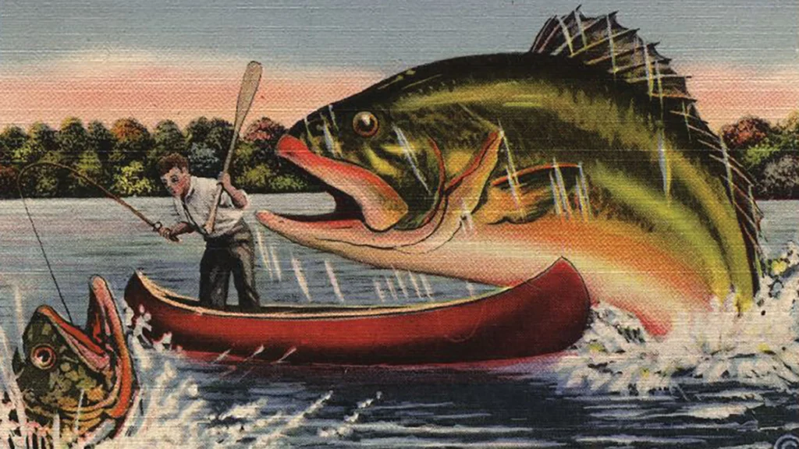
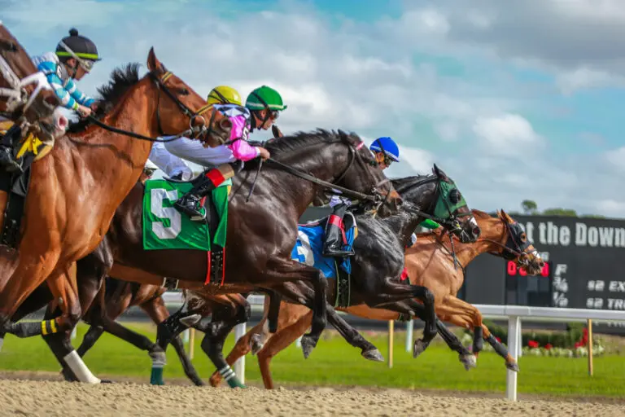
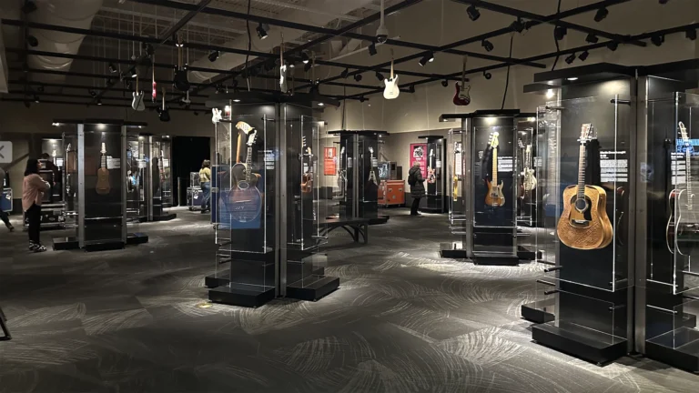

Current Exhibits
Mapping the American Sea: A Cartographic History of the Gulf of Mexico
Through December 7, 2025
Learn More

Upcoming Exhibits

The Sport of Kings and Queens: Florida’s History of Horse Racing
Opening January 10, 2026 — explore Florida’s thoroughbred industry and the rise of Ocala as the “Horse Capital of the World.”
Learn More

America at the Crossroads: The GUITAR and a Changing Nation
Opens January 31, 2026 — trace America's cultural evolution through one of its most iconic instruments.
Learn MorePermanent & Ongoing Galleries
Touchton Map Library & Florida Center for Cartographic Education
Explore centuries of cartographic history — thousands of maps, charts, and documents chronicling exploration and development across Florida and the Gulf Coast.
Learn More
Treasure Seekers (Conquistadors, Pirates & Shipwrecks)
Dive into Florida’s maritime past, with stories of early explorers, pirates, and shipwrecks — a permanent favorite at the museum.
Learn More